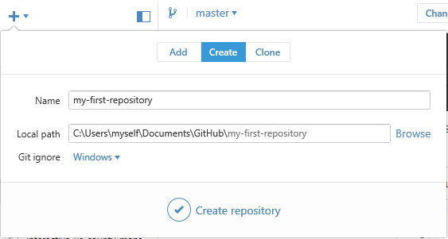

Creating Your First Repository
You've got the GitHub desktop app installed and hooked up to your account. Now it's time to start putting something under version control!
In the GitHub desktop app, click the plus arrow in the upper left. By default, this lets you Create a new repo. (You can also Add one already on your system that the app doesn't know about yet, or Clone one that's already on GitHub but not on your computer.) Give the repo a descriptive name (no spaces!) and choose where you want it to be saved. By default, it saves new repos in C:\Users\[[username]]\Documents\GitHub\[[repo-name]], which is the same as saying My Documents > GitHub > [[repo-name]]. You can choose a different location if you prefer. Once you've picked a name and a place to save the repo, go ahead and click Create Repository.
Create the Repo

You've just created a folder where git can track your work for this project!
When you create your first repo, it will automatically make your first commit for you. This first commit contains files that help git properly track your work. You can ignore these files for now, but don't move or delete them! These files are usually hidden, so you'll likely only see them if you have enabled the viewing of hidden system files on your computer.